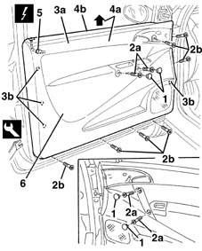
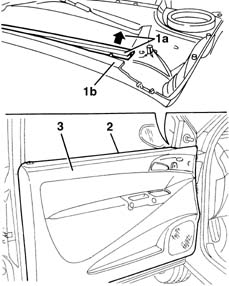

7005E08 front side door interior panel r r
- Path
- Procedures > 70 FITTINGS > 7005 PASSENGER COMPARTMENT FRONT SIDE DOORS > 7005E front side door trim > 7005E08 front side door interior panel r r
- Kind
- repair procedure (removal / refitting; the operation number is the code)
- Applies to
- all engines; all production periods
- Interactive page
- https://sloeber94.github.io/elrnDB-lYpsln/en/#/2429506
Applies to: all engines; all production periods
 Removing
Removing
 Refitting
Refitting7005C44 interior handle panel - r r
7005M11 Driver's front door electric window control SWITCH - R.R.
7005M12 passenger side front door electrically operated window switch - r r
7005E12 corner cover of one front side door, lh or rh r r
1. Release the covers.
2. Undo the bolts (2a) and (2b). The driver's door panel differs from the passenger door panel through the different position of the bolts (2a) as shown in the diagram.
3. Release the panel (3a) inner retainers (3b) using the special tool.
 | Name | Country |
|---|---|---|
3 | Scraper blade | 1.878.077.000 |
4. Lift up the panel (4a) to release the upper profile (4b) from the door frame.
5. (Driver's door only). Disconnect the anti-theft device deterrent LED connector.
 | Name | Connector |
|---|---|---|
5 | Driver's front door locking / unlocking LED |
6. Keep the door pane.

Applies to: all engines; all production periods
Refitting
RemovingCheck that the panel is undamaged and that the retainers are undamaged and correctly positioned.
1. Detach the inner glass scraper (1a) from the panel housing (1b).
Connect the electrical connection (driver's door only).
2. Fit the glass scraper in the door frame housing.
3. Fit the panel on the glass scraper and attach the retainers.

Applies to: all engines; all production periods
Tighten the bolts and fit the covers.
7005E12 corner cover of one front side door, lh or rh r r
7005M12 passenger side front door electrically operated window switch - r r
7005M11 Driver's front door electric window control SWITCH - R.R.
Topics linked from this page (5)
- 7005C44 interior handle panel - r r
- 7005E12 corner cover of one front side door, lh or rh r r
- 7005M11 Driver's front door electric window control SWITCH - R.R.
- 7005M12 passenger side front door electrically operated window switch - r r
- E36 Driver's front door locking / unlocking LED
Topics that link to this page (17)
- 5505A42 (DIGITAL NETWORK) CONTROL UNIT IN DRIVER'S DOOR -R.R.
- 5505A46 (Digital network node) CONTROL UNIT in passenger door - R.R.
- 5505B11 front door wiring - r r
- 5570T90 front speaker - r r
- 5580E18 anti-theft device w/l - r+r following electrical wiring check
- 7005A09 front side door interior support farme r r
- 7005A28 front side door limiter- repair or replace
- 7005C08 front door exterior handle mount (one), lh or rh - r r
- 7005C51 front side door inner catch device - r+r for repair or replacement
- 7005C53 interior opening handle - r r
- 7005D15 front side door descending window glass r r
- 7005D30 front side descending window glass scraper (inner) r r
- 7005M26 ONE FRONT DOOR ELECTRIC WINDOW MECHANISM', LEFT OR RIGHT - R.R .
- 7005M29 front side door electrically operated window motor r r with door panel-mount frame removed
- 7005N21 front side door lock motor-lock assembley-r r
- 7205E36 Stripping FRONT SIDE DOOR
- 7205E37 STRIPPING FRONT SIDE DOOR INNER SUPPORT FRAME